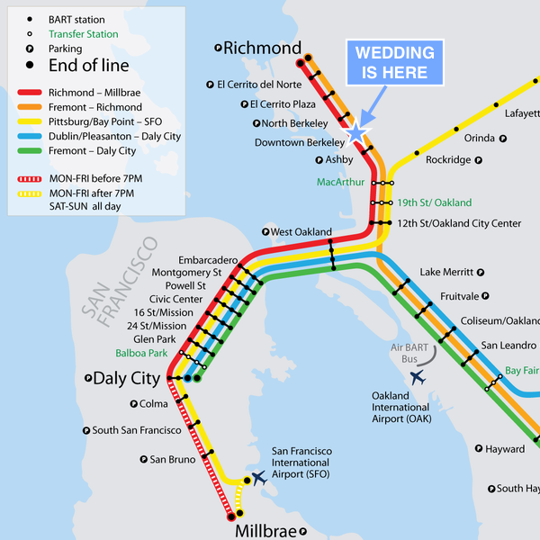

Air travel

We recommend taking BART to the
Downtown Berkeley stop.
For hotel and
ground transportation
ideas, see below
Back to top
Hotels
Berkeley City Club $$$
This is where we'll be staying, and where the wedding will be!
Hotel Shattuck Plaza $$
We visited this hotel and it seemed very nice! Great location
Travelodge Berkeley $
Also very close to venue and BART!
Airbnb $ - $$$
Ground transportation
Back to top
Getting around
Should I rent a car?
If you're planning on staying within San Francisco and Berkeley, sticking
to BART and other urban
transit (Uber/
Lyft,
public transportation) is probably your best bet.
If you'd like to explore beyond the San Francisco/Berkeley area, you'll
need to rent a car. Parking in Berkeley and San Francisco can be
tough,
so we recommend checking with your hotel/bnb to see if they provide
parking.